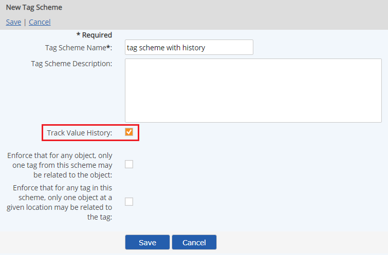
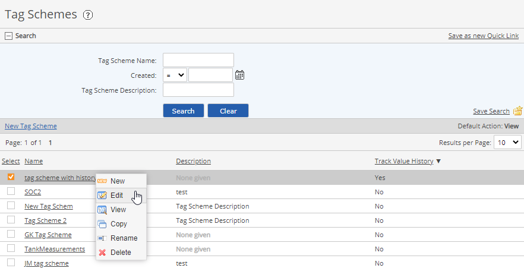
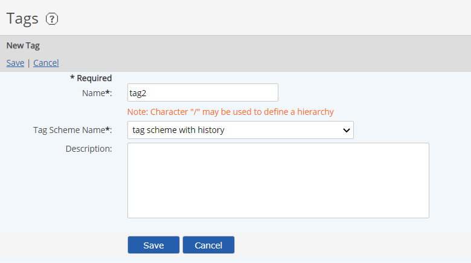
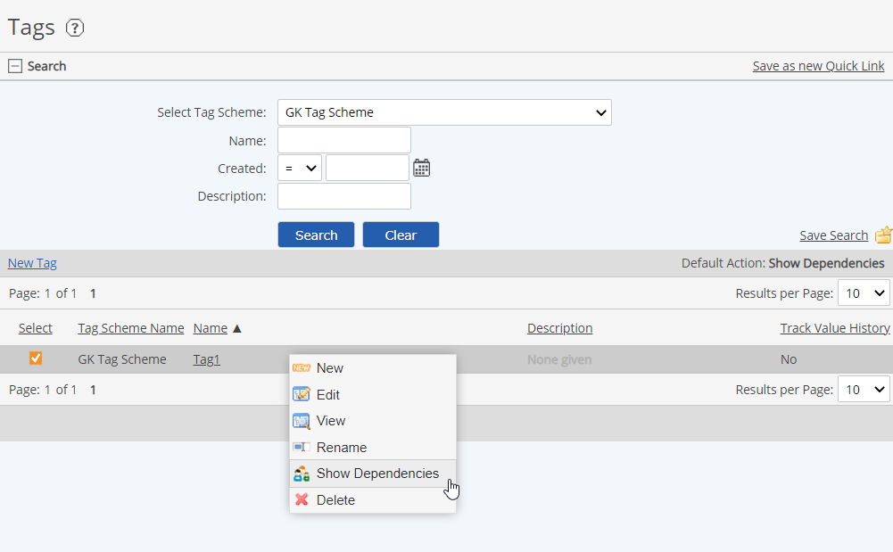
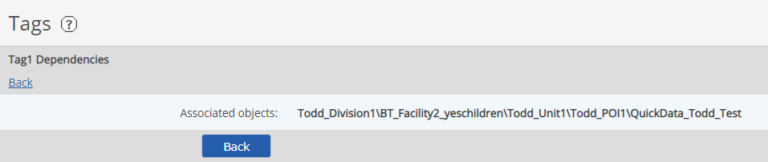

Tag Schemes allow system architects to apply a flexible classification scheme that can be used to identify what a System Model object represents via tagging. It offers a more formalized approach to object identification than naming conventions, Custom Field Templates or system property values that are changeable and may be misinterpreted.
Tag schemes are used:
Track Value History can be configured for a new tag scheme to track the history of requirements values associated with tags in the scheme and can be configured at the time of creation only.
Tag Schemes with the Track Value History option may not be used in either Material Formula Based Properties or Material Activity Calculated Requirement scripts.
Unlike Unique ID tags, the same tag may be applied to multiple objects. A System Model object may also have multiple tags from the same or different tag schemes. Usage restrictions may be defined according to the tag scheme, with the following Tag Scheme properties:
Tags have the following properties:
A Tag Scheme may be copied, with all its associated tags. When Tag Schemes are copied, all Tags in the scheme are also copied, as new tags with different scheme associations. The association of Tags/Tag Schemes with System Model objects is NOT copied.
When copying or moving System Model objects, the association of objects to tags is copied with them.
Users must have the System Right "Manage Tag Schemes" to modify the Tag Schemes in a System.
Enter a name for the Tag Scheme and optional description.
Tag names are limited to 100 characters.
Select what restrictions you want to enforce in the Tag Scheme, if any:
Enforce that for any object, only one tag from this scheme may be related to the object.
Enforce that for any tag in this scheme, only one object at a given location may be related to the tag.

To edit a Tag Scheme, from the Tag Schemes page, right-click the tag scheme and select Edit.

To rename a Tag Scheme, from the Tag Schemes page, right-click the tag scheme and select Rename.
When Tag Schemes are copied, all Tags in the scheme are also copied, with the original names. The association of Tags/Tag Schemes to System Model objects is not copied with them.
You can create new tags that can be associated with objects.
To create a new Tag:

Tags may not be deleted if they are currently associated with any objects.
To view tag-object associations, right-click a tag and select Show Dependencies.


Enter the new name and click Save.
Renaming a tag will not cause re-calculation since they are referenced by ID not Name.
Select Yes to continue.
Deleting a tag is not allowed if the tag is referenced in any calculation scripts.
Tag associations may be edited by bulk edit in the main UI, as well as through bulk tools.